K562 Neither DNase matched - State 21:Repr (n=15)
K562 Neither DNase matched - State 21:Repr (n=15)
[
See group descriptions
]
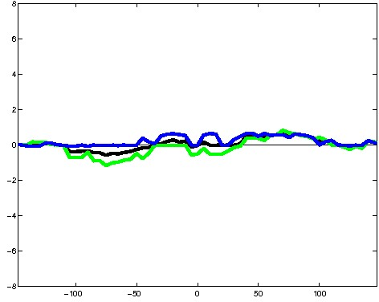
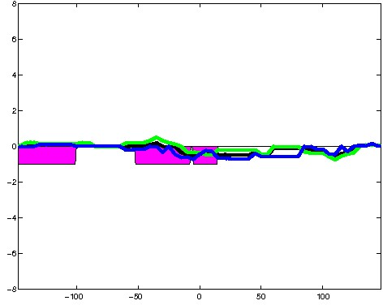
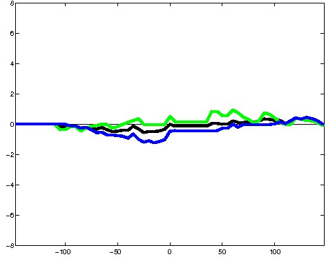
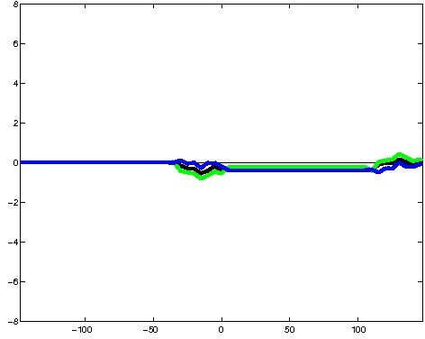
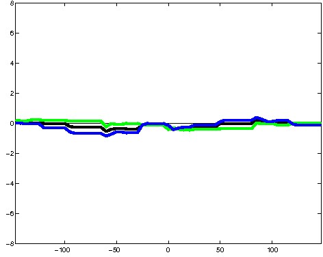
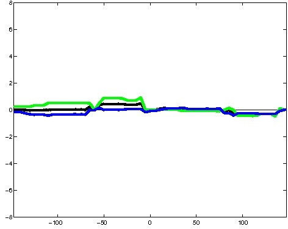
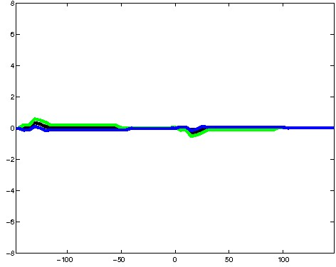
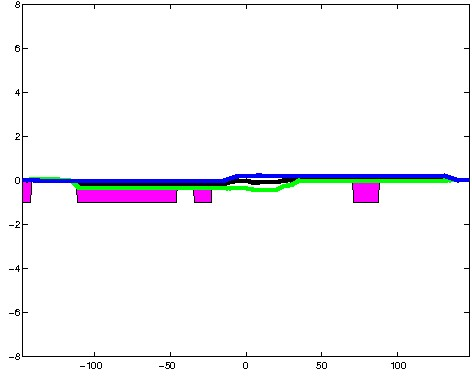
; picked in K562 (state 21:Repr, DNase); matched; chr2:54,686,289-54,686,583 (295bp)")
; picked in K562 (state 21:Repr, DNase); matched; chr11:113,649,049-113,649,343 (295bp)")
; picked in K562 (state 21:Repr, DNase); matched; chr7:128,327,389-128,327,683 (295bp)")
; picked in K562 (state 21:Repr, DNase); matched; chr1:206,222,829-206,223,123 (295bp)") 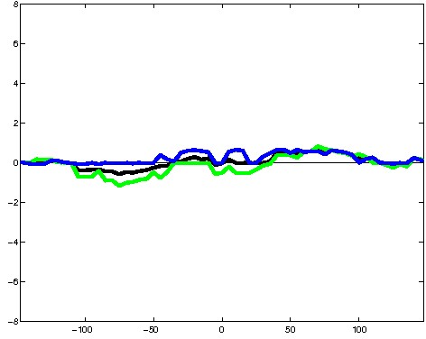
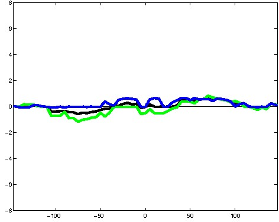
; picked in K562 (state 21:Repr, DNase); matched; chr6:35,931,009-35,931,303 (295bp)") 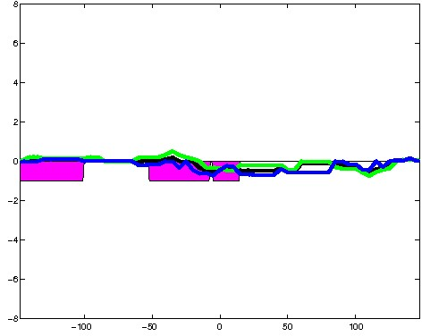
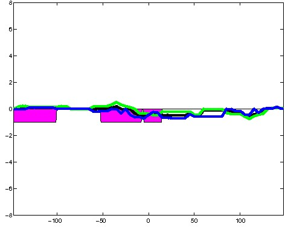
; picked in K562 (state 21:Repr, DNase); matched; chr7:148,320,629-148,320,923 (295bp)") 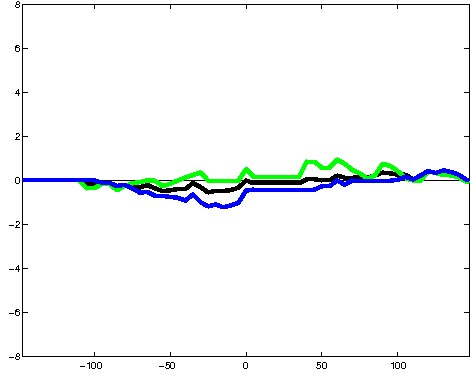
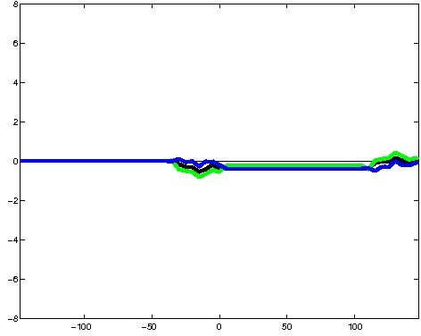
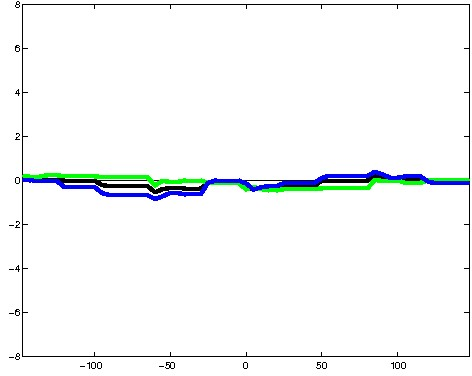
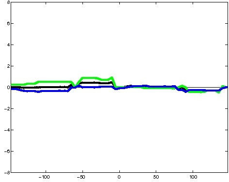
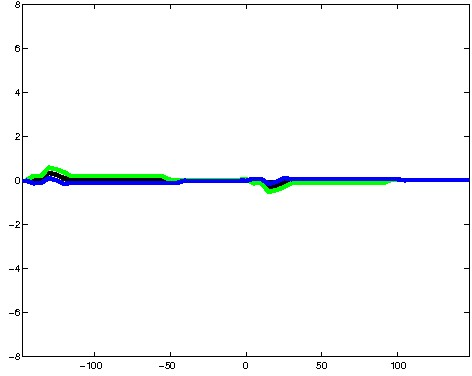
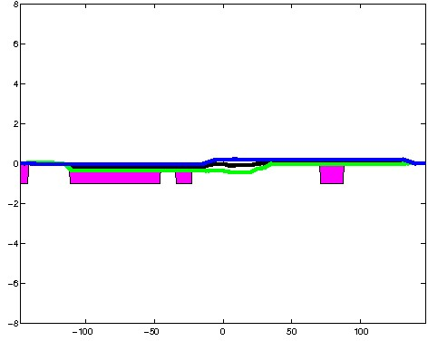
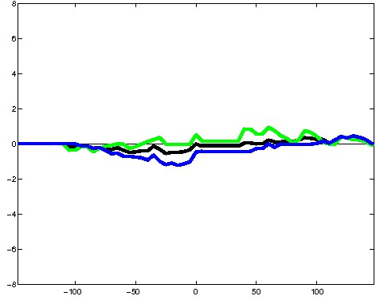
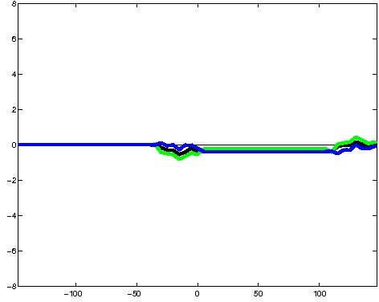
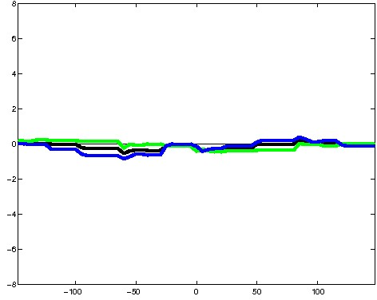
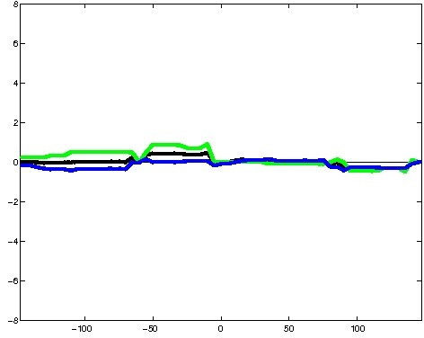
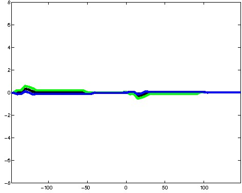
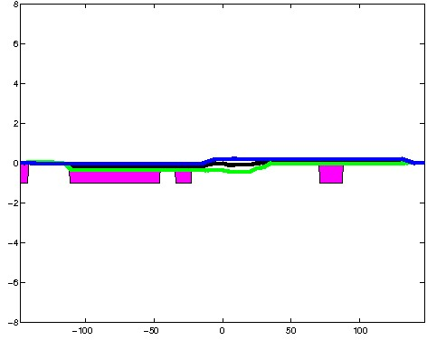
; picked in K562 (state 21:Repr, DNase); matched; chr7:148,817,429-148,817,723 (295bp)")